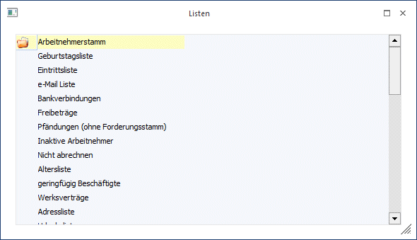
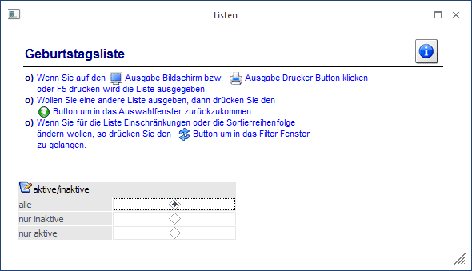
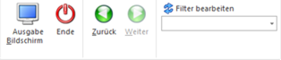

Üben den Menüpunkt
1 Auswertungen
1 Stammdatenauswertungen
1 Diverse Stammlisten
gibt es die Möglichkeit, eine Reihe von Listen auszugeben, die die verschiedensten Stammdaten auswerten. Die Listen sind in diverse Rubriken unterteilt, wobei jede Rubrik wieder in eine bzw. mehrere Listen aufgeteilt ist:

Arbeitnehmerstamm
ü Geburtstagsliste
Listet alle
AN, sortiert nach dem Geburtstag
ü Eintrittsliste
Listet alle AN,
sortiert nach dem Eintrittsdatum, absteigend (der AN mit der längsten
Betriebszugehörigkeit scheint als Letzter auf).
ü e-Mail Liste
Listet alle AN und
ihre eMail-Adresse
ü Bankverbindungen
Liste alle AN
und ihre Bankverbindung. Dazu wird auch noch das Auszahlungskennzeichen
angezeigt.
ü Freibeträge
Liste alle AN, die
einen Freibetrag eingetragen haben.
ü Pfändungen (ohne
Forderungsstamm)
Listet alle AN, bei denen eine Pfändung (ohne
Rangverwaltung) hinterlegt ist (das Pfändungsmodul ist ein Zusatzprogramm zum
WinLine LOHN).
ü Inaktive Arbeitnehmer
Listet
alle AN, die auf inaktiv gesetzt wurden.
ü Nicht abrechnen
Listet alle AN,
bei denen die Checkbox "nicht abrechnen" aktiviert ist.
ü Altersliste
Liste aller AN,
sortiert nach dem Alter, bezogen auf den 1. der aktuellen Abrechnungsperiode
ü geringfügig Beschäftigte
Liste
aller geringfügig Beschäftigten AN
ü Werksverträge
Liste aller AN,
die als Werksvertrag gekennzeichnet sind.
ü Adressliste
Liste aller AN mit
ihrer Adresse, Telefonnummer und eMail-Adresse.
ü Urlaubsliste
Listet alle AN mit
ihren aktuellen Urlaubsdaten. Bei dieser Auswertung werden die verbrauchten
Urlaube nach dem Urlaubsstichtag bewertet, d.h. es werden nur die Urlaubstage
genommen, die bis/nach dem Urlaubsstichtag angefallen sind.
ü AVAB/AEAB Liste
Liste aller AN,
bei denen ein AVAB oder ein AEAB hinterlegt ist.
ü Pendlerpauschale
Liste aller
AN, bei denen eine Pendlerpauschale hinterlegt ist.
ü BV-Pflichtige
Arbeitnehmer
Liste aller AN, für die BV-Beiträge abgeführt werden müssen.
Lohnartenstamm
ü SV nicht pflichtig
Listet alle
Lohnarten, die SV nicht pflichtig gesetzt sind.
ü SV NZ pflichtig
Listet alle
Lohnarten, bei denen die SV auf Normalzahlung gestellt ist.
ü SV SZ pflichtig
Listet alle
Lohnarten, bei denen die SV auf Sonderzahlung gestellt ist.
ü LS nicht pflichtige
Lohnarten
Listet alle Lohnarten, bei denen die Lohnsteuer nicht pflichtig
ist.
ü LS NZ pflichtige
Lohnarten
Listet alle Lohnarten, bei denen die Lohnsteuer auf Normalzahlung
gestellt ist.
ü LS SZ pflichtige
Lohnarten
Listet alle Lohnarten, bei denen die Lohnsteuer auf Sonderzahlung
gestellt ist.
ü Inaktive Lohnarten
Listet alle
Lohnarten, die auf Inaktiv gesetzt sind.
ü Komm.St.Pflichtig
Listet alle
Lohnarten, die Kommunalsteuerpflichtig sind.
ü DB pflichtig
Listet alle
Lohnarten, die DB-pflichtig sind
ü J/6 pflichtig
Listet alle
Lohnarten, die J/6 pflichtig sind.
ü Lohngruppenzuordnung
Liste
aller Lohnarten, sortiert nach der Lohngruppenzuordnung.
Betriebsdatenstamm
ü Betriebsdaten
Listet alle
Betriebsdatenstämme
ü Krankenkassen
Listet alle
Krankenkassenstämme
ü Finanzamt
Listet alle
Finanzamtsstämme
ü Inaktive Betriebe
Listet alle
Betriebe, die auf Inaktiv gesetzt sind.
ü Gemeinden
Listet alle
Gemeindestämme auf
ü BV-Kasse
Listet alle angelegten
BV-Kassen auf
ü Arbeitsstätte
Listet alle
angelegten Arbeitsstätten auf
Herstellerdaten
ü ELDA - Herstellerdaten
Zeigt
den Herstellerstamm für die elektronische Übermittlung an die ELDA
ü L16 - Herstellerdaten
Zeigt den
Herstellerstamm für die elektronische Übermittlung der L16 an die datakom.
Lohngruppen / Kontierungen
ü Lohngruppenliste
Listet alle
Lohnarten und ihre Kontierung für die Finanzbuchhaltung.
Firmenkonstanten
ü Firmenkonstanten
Listet alle
Firmenkonstanten und die dazugehörigen Werte.
Alle Listen werden in einer Art Assistenten aufgerufen, wobei alle Listen nach dem gleichem Schema bearbeitet werden können.
Im 1. Schritt muss gewählt werden, welche Art von Auswertungen (siehe obige Liste) durchgeführt werden soll. Dies kann durch Anklicken des gewünschten Eintrages gemacht werden. Dabei ist darauf zu achten, dass kein Eintrag gewählt wird, der als Hauptkriterium gilt (Arbeitnehmerstamm, Lohnartenstamm etc.).
Wenn eine Liste gewählt wurde, gibt es zwei Möglichkeiten:
ü Weiter-Button
Durch Anklicken
des Weiter-Buttons gelangt man in das nächste Fenster.
ü Ende-Button
Durch Anklicken
des Ende-Buttons wird das Fenster wieder geschlossen.
Bei den meisten Stammdatenlisten kann im nächsten Schritt noch entschieden werden, welche Datensätze ausgegeben werden sollen:

Ø aktive/inaktive
Über den Radiobutton kann gesteuert werden, ob alle Datensätze, nur die inaktiven Datensätze oder nur die aktiven Datensätze ausgegeben werden sollen. Diese Option kann bei den Listen "Inaktive Arbeitnehmer", "Inaktive Lohnarten" und "Inaktive Betriebe" naturgemäß nicht ausgewählt werden.
Buttons

Ø Ausgabe
Aus der Auswahllistbox kann gewählt werden, ob die Ausgabe am Bildschirm oder am Drucker durchgeführt werden soll. Standardmäßig wird die Ausgabe auf Bildschirm vorgeschlagen, die auch durch Drücken der F5-Taste gestartet werden kann.
Ø Ende
Mittels Ende Button wird das Fenster geschlossen
Ø Zurück, Weiter
Durch Anklicken des Zurück-Buttons bzw. durch Drücken der Tastenkombination ALT + Z gelangt man in den vorigen Bildschirm zurück, wo wieder die Selektion der Liste durchgeführt werden kann. Mit dem Vor Button gelangt man in den jeweils nächsten Schritt.
Ø Filter
Sollen zusätzliche Selektionskriterien und/oder Sortierungen vorgenommen werden, so muss der Filter-Button aktiviert werden (näheres dazu entnehmen Sie bitte dem Kapitel "Filter - Assistent").
Wenn die Liste am Bildschirm ausgegeben wird, dann wird das Hauptmerkmal der Liste (z.B. der Arbeitnehmer, die Lohnart, der Betrieb etc.) blau und unterstrichen dargestellt. Wenn dieses Merkmal angeklickt wird, wird der dazugehörige Stammdatensatz geöffnet und kann bearbeitet werden.